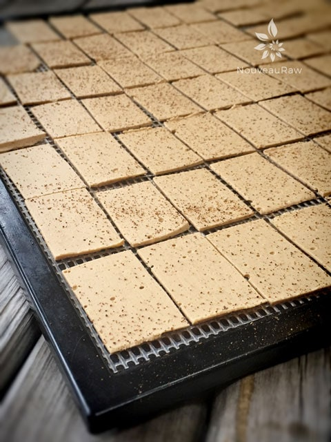
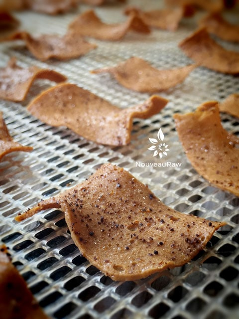

Mexican Chili Cheese Chips
 ~ high-raw, vegan, gluten-free ~
~ high-raw, vegan, gluten-free ~
Mexican Chili Cheese Chips are a byproduct of my vegan Mexican Chili Cheese recipe. As I have shared in other postings similar to this one, I stumbled upon making “cheese chips” when I had too much cheese on my hands that I feared might go bad and thought I would try this experiment.
Now, it’s a permanent part of my “cheese” making ritual. When I prepare the cheese, I divide it into two large portions. One portion is kept for its use as a typical cheese, and the other portion is for “cheese chips”. These chips add an interesting variety to our raw menu.
I love how they take on a cooked/fried appearance, yet they are only dehydrated at 115 degrees (F). It is amazing how the color darkens, and the flavor deepens. I use a mandolin that creates very thin slices, much like (this) one.
It was rather sweet after I took the photos, I left a container of them on the island in the kitchen. Bob kept eyeballing them; he has learned not to eat food until I give him the go-ahead. I can’t recall how many times he had eaten my creations before I was able to log their existence through a photoshoot. hehe
Anyway, I gave him the go-ahead to eat them. All-day he walked by eating a few, then saying how delicious they were. Finally, I told him just to take the whole container with him, and he was like, “Oh?? really, yay!” and off he went with them. Nothing brings me greater joy than to make food that people love and is healthy for them.
I hope that you enjoy them as much as we do. I would love to hear your thoughts and comments below! Blessings, amie sue
- 1 cup cashews, soaked 2+ hours
- 3/4 cup water
- 3 Tbsp nutritional yeast
- 2 Tbsp raw coconut vinegar
- 1 Tbsp chili powder
- 1 Tbsp Sriracha sauce
- 1 tsp onion powder
- 1 tsp Himalayan pink salt
- 1 tsp garlic powder
Agar gel:
Preparation:
- Place the cashews in a glass bowl, along with 4 cups of water.
- The soaking process will help reduce phytic acid, which will aid in digestion.
- The soaking also softens the cashews, so they blend up nice and creamy.
- After the cashews are through soaking, drain, and rinse.
- In a high-powered blender combine the; cashews, water, nutritional yeast, vinegar, chili powder, Sriracha, onion powder, salt, and garlic. Blend until creamy and smooth.
- Due to the volume and the creamy texture that we are going for, it is important to use a high-powered blender. It could be too taxing on a lower-end model.
- Blend until the batter is creamy smooth. You shouldn’t detect any grit. If you do, keep blending.
- This process can take two to four minutes or more, depending on the strength of the blender. Keep your hand cupped around the base of the blender carafe to feel for warmth. If the batter is getting too warm, stop the machine and let it cool. Then proceed once cooled.
- Note: Sriracha sauce is not raw. You can use any hot sauce or even cayenne instead.
- In a small saucepan whisk together 3/4 cup of water and the agar. Bring to a boil for about one minute, stirring constantly. Reduce the heat and simmer for about 5 minutes, constantly stirring until the agar is completely dissolved.
- Start the blender creating a vortex, CAREFULLY add the agar gel and blend just long enough to incorporate everything together. Don’t over-process. The batter will start to thicken.
- Be careful that the liquid doesn’t splatter, hitting your skin.
- What is a vortex? Look into the container from the top and slowly increase the speed from low to high, the batter will form a small vortex (or hole) in the center. High-powered machines have containers that are designed to create a controlled vortex, systematically folding ingredients back to the blades for smoother blends and faster processing… instead of just spinning ingredients around, hoping they find their way to the blades.
- If your machine isn’t powerful enough or built to do this, you may need to stop the unit often to scrape the sides down.
- Pour the mixture into your mold of choice so it can firm up.
- Once firm, using a mandolin, create thin slices and place them on the mesh sheet that comes with the dehydrator.
- I use a mandolin like (this) one
- Sprinkle with salt and chili powder.
- Dehydrate at 115 degrees (F) for 6-10 hours or until crispy.
- Store in an airtight container on the counter for 5-7 days (?)… they get eaten so quickly that I am really not too sure.

I love how they naturally curl and darken during the drying time.

© AmieSue.com